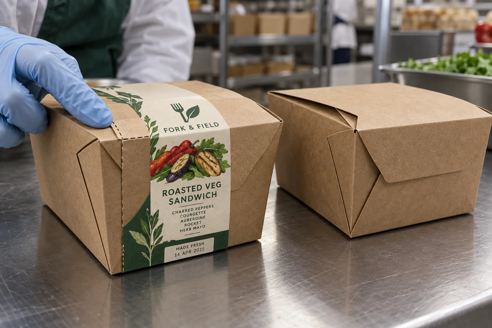

The label crosses more than one surface
A flat proof can make a takeaway carton seal look effortless. On the packing table, the label bends across a lid edge, turns a corner and lands on another paperboard face. If the fold pulls the ends away, a stronger claim on the datasheet will not fix a badly chosen route across the box.
HERMA's takeaway-label guidance describes over-corner closure labels and optional perforations. It also notes that package materials vary. I would read that as a reason to qualify the exact carton, not as evidence that any printed sticker automatically provides tamper protection.
Two packing tables, two priorities
Imagine a composite sandwich shop closing kraft boxes by hand during lunch service. The operator needs a label that can be placed quickly and torn without destroying the printed product name. A shorter seal with an obvious tear path may beat a large decorative band that takes two hands to align.
A composite chilled-food packer uses printed carton labels with a variable packed date and barcode. Here the print zone cannot sit on the sharpest fold or the scanner may see a broken code. I would place the variable information on a flat panel and let the seal portion do the bending. The line must verify that the correct dated roll or overprint belongs to the food inside.
Run the packed-box trial
Fold real cartons, fill them to normal height, close them and apply sample labels at the intended pace. Inspect adhesion on both faces and the corner after stacking and delivery handling. If food oil or condensation can reach the outside, include that condition. Ask someone unfamiliar with the prototype to open the box; the tear feature should work without hiding the food name or pulling off half the carton surface.
| Failure | First check |
|---|---|
| End lifts | Contact area on each face and carton coating |
| Print cracks at fold | Artwork position, finish and fold radius |
| Box is hard to open | Perforation or non-adhesive pull area |
| Date is unreadable | Keep variable print on a flat panel |
| Seal peels without trace | Do not claim first-opening evidence until validated |
Our buying view
Make the carton do the talking
I would bring the actual packed box to the proof review. It shows the fold, surface and opening motion in minutes. Without it, a label supplier is being asked to guess where the adhesive will land.
Send a useful carton-seal RFQ
- Current carton stock, coating and folded samples.
- Packed height, closure sequence and application speed.
- Required printed name, date and barcode positions.
- Desired first-opening indication and tear direction.
- Stacking, transport and outside moisture or grease exposure.
Compare general food seal-label options and paper-packaging grease exposure before choosing a material.
Frequently asked questions
Can an ordinary product label also close a box?
Only if its material, adhesive, size and placement are designed and tested for the actual fold and opening path.
Should the seal include a perforation?
A tear feature may help opening, but its location and strength need a packed-box trial.
Will one adhesive work on every kraft carton?
Do not assume so. Coatings, fibers, folds, grease and handling can change the contact surface. Test the actual carton stock.
Related buyer guides
Review your label specification
Send package photos, label dimensions, material details, quantity and application conditions. Include good and failed samples where possible so the discussion starts with evidence.
Continue with Cake Window Box Labels: Show the Cake, Keep the Lid Clear for a focused purchase checklist.